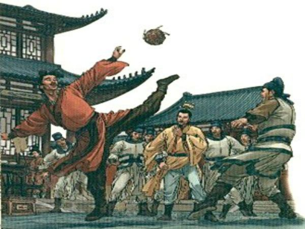
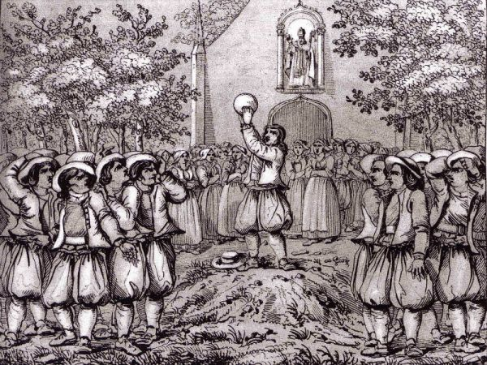

Os chineses por volta de 2.600 a.C., tinham um rito que era conhecido como "TsüTsü" onde basicamente se resumia no uso da cabeça dos chefes de inimigos, a tribo que se consagrava vencdora, pegava a cabeçã do chefe inimigo para ser chutada. Os guerreiros acreditavam que pelo pé seria ligado a inteligência, coragem, força, habilidade e liderança do inimigo. histórias semelhantes foram descobertas na idade média no velho continente e no século X, especificamente no território inglês. Por volta de 2.600 a.C., por coincidência ou não, começa no Japão a prática do "Kemari", ondese tem como objetivo o controlar a bola com os pés, revelando dinamismo, autoridade e estilo. Essa cerimônia que ainda existe no país, celebra o autoconhecimento, o autocontrole e a autoaprendizagem. Serve, ainda, de base para a disciplina. No período compreendido entre 1.200 e 1.600 a.C., a América pré-hispânica inicia a prática do "Tlachtli", jogado com uma bola de borracha dura e cuja finalidade era representar a batalha entre a luz e a escuridão.
 Veja sobre os principais jogadores 